# Borramos variables de environment
rm(list = ls())
# descomentar si es la primera vez (y requieren instalación)
# install.packages("glue")
# install.packages("dplyr")
# install.packages("gapminder")
library(glue)
library(dplyr)
library(tidyverse)
library(ggplot2)
library(ggridges)Práctica 1: Tidyverse y gglot
Instrucciones (leer antes de empezar)
Modifica dentro del documento
.qmdvuestros datos personales (nombre y apellidos, ordenados por apellido) ubicados en la cabecera del archivo.Asegúrate, ANTES de seguir editando el documento, que el archivo
.qmdse renderiza correctamente y se genera el.htmlcorrespondiente en tu carpeta local de tu ordenador.Algún chunk (caja de código) creado puede estar vacío o incompleto, de ahí que puedan tener la opción
#| eval: false. Una vez que edites lo que consideres, debes ir cambiando cada chunck como consideres.Recuerda que puedes ejecutar chunk a chunk con el botón play o ejecutar todos los chunk hasta uno dado (con el botón a la izquierda del anterior).
Aviso para que nadie se lleve luego las manos a la cabeza 😇😇😇
- Tenéis que subir un archivo (carpeta)
.zipque contenga el archivo.qmd, el archivo de estilosstyle.scssy todas las dependencias que hayáis utilizado (ficheros,imágenes,funciones, etc). Tanto esta carpeta comprimida como el archivo.qmddeben estar nombrados como:
practica_{número_práctica}_{nombre1}_{nombre2}_{nombre3}.
Lo primero que haré será ejecutar vuestro archivo
.qmdpara ejecutar el código, por lo que será requisito necesario (aunque no suficiente) que pueda generar sin problemas el.htmlcorrespondiente.Salvo el caso anterior (y algún caso excepcional) NUNCA voy a revisar los códigos
.qmd. Por lo que en el.htmldeben figurar tanto las soluciones a los ejercicios propuesto como sus códigos respectivos.Aunque no es ni mucho menos el objetivo ni de esta ni de otras entregas, la limpieza y el orden (explicaciones, presentación, código legible, ordenado y comentado, etc) se valorarán positivamente.
Paquetes necesarios
Necesitaremos los siguientes paquetes (haz play en el chunk para que se carguen):
Caso práctico I: Análisis de datos UNESCO
El archivo de datos a usar será student_ratio.csv.
Recomendación
Recordad que, independientemente de si os encontréis en esta asignatura o en la vida real, siempre hay que ser organizado. Intentad que todos los elementos que utilicéis estén organizados.
Ejercicio 1
Determina el porcentaje de registros correspondientes a cada nivel educativo
student_data <- read_csv(file = "./datos/student_ratio.csv")
student_ratio_percentage <- student_data |> drop_na(indicator) |> count(indicator, sort = TRUE) |> mutate(percent = (n/sum(n))*100, .before = n) |> mutate(n=NULL) |> rename(nivel_educativo = indicator)
student_ratio_percentage# A tibble: 7 × 2
nivel_educativo percent
<chr> <dbl>
1 Primary Education 19.8
2 Secondary Education 16.2
3 Pre-Primary Education 16.1
4 Lower Secondary Education 14.2
5 Upper Secondary Education 13.5
6 Tertiary Education 10.6
7 Post-Secondary Non-Tertiary Education 9.52Ejercicio 2
Por cada nivel educativo, determina el territorio con mayor ratio y peor ratio. Repítelo por nivel educativo y año.
rm(list = ls())
student_data <- read_csv(file = "./datos/student_ratio.csv")Por nivel educativo, territorio con mayor ratio:
student_data |> drop_na(student_ratio) |> slice_max(student_ratio, by = indicator)# A tibble: 7 × 6
edulit_ind indicator country_code country year student_ratio
<chr> <chr> <chr> <chr> <dbl> <dbl>
1 PTRHC_2 Lower Secondary Education MRT Maurit… 2013 56.6
2 PTRHC_1 Primary Education CAF Centra… 2016 83.4
3 PTRHC_3 Upper Secondary Education PNG Papua … 2016 83.3
4 PTRHC_02 Pre-Primary Education TZA United… 2017 114.
5 PTRHC_2T3 Secondary Education CAF Centra… 2012 68.1
6 PTRHC_5T8 Tertiary Education SYR Syrian… 2015 64.4
7 PTRHC_4 Post-Secondary Non-Tertia… CZE Czechia 2013 169. Por nivel educativo, territorio con menor ratio:
student_data |> drop_na(student_ratio) |> slice_min(student_ratio, by = indicator)# A tibble: 7 × 6
edulit_ind indicator country_code country year student_ratio
<chr> <chr> <chr> <chr> <dbl> <dbl>
1 PTRHC_2 Lower Secondary Education BMU Bermuda 2014 4.58
2 PTRHC_1 Primary Education SMR San Ma… 2012 6.27
3 PTRHC_3 Upper Secondary Education NIU Niue 2015 3.5
4 PTRHC_02 Pre-Primary Education TKL Tokelau 2016 4.33
5 PTRHC_2T3 Secondary Education BMU Bermuda 2014 4.98
6 PTRHC_5T8 Tertiary Education GRD Grenada 2017 1.16
7 PTRHC_4 Post-Secondary Non-Tertia… KGZ Kyrgyz… 2013 1.36Por nivel educativo y año, territorio con mayor ratio:
student_data |> drop_na(student_ratio) |> slice_max(student_ratio, by = c(indicator, year))# A tibble: 49 × 6
edulit_ind indicator country_code country year student_ratio
<chr> <chr> <chr> <chr> <dbl> <dbl>
1 PTRHC_2 Lower Secondary Education MRT Maurit… 2013 56.6
2 PTRHC_2 Lower Secondary Education MRT Maurit… 2014 51.9
3 PTRHC_2 Lower Secondary Education MRT Maurit… 2015 53.2
4 PTRHC_2 Lower Secondary Education BGD Bangla… 2016 41.1
5 PTRHC_1 Primary Education CAF Centra… 2012 80.1
6 PTRHC_1 Primary Education MWI Malawi 2013 69.1
7 PTRHC_1 Primary Education MWI Malawi 2014 72.7
8 PTRHC_1 Primary Education MWI Malawi 2015 69.5
9 PTRHC_3 Upper Secondary Education ERI Eritrea 2013 36.8
10 PTRHC_02 Pre-Primary Education TZA United… 2012 113.
# ℹ 39 more rowsPor nivel educativo y año, territorio con menor ratio:
student_data |> drop_na(student_ratio) |> slice_min(student_ratio, by = c(indicator, year))# A tibble: 49 × 6
edulit_ind indicator country_code country year student_ratio
<chr> <chr> <chr> <chr> <dbl> <dbl>
1 PTRHC_2 Lower Secondary Education BMU Bermuda 2013 4.95
2 PTRHC_2 Lower Secondary Education BMU Bermuda 2014 4.58
3 PTRHC_2 Lower Secondary Education BMU Bermuda 2015 6.02
4 PTRHC_2 Lower Secondary Education LIE Liecht… 2016 5.63
5 PTRHC_1 Primary Education SMR San Ma… 2012 6.27
6 PTRHC_1 Primary Education BMU Bermuda 2013 7.19
7 PTRHC_1 Primary Education BMU Bermuda 2014 6.72
8 PTRHC_1 Primary Education LIE Liecht… 2015 7.85
9 PTRHC_3 Upper Secondary Education BMU Bermuda 2013 5.71
10 PTRHC_02 Pre-Primary Education ISL Iceland 2012 5.03
# ℹ 39 more rowsEjercicio 3
Realiza un muestreo aleatorio estratificado (por nivel educativo) del 30% de los datos. Tras realizarlo realiza las comprobaciones necesarios para chequear que, efectivamente, se ha realizado la estratificación de manera adecuada.
rm(list = ls())
student_data <- read_csv(file = "./datos/student_ratio.csv")
random_sampling <- student_data |> drop_na(indicator) |> slice_sample(prop = 0.3, by=indicator)
random_sampling# A tibble: 1,555 × 6
edulit_ind indicator country_code country year student_ratio
<chr> <chr> <chr> <chr> <dbl> <dbl>
1 PTRHC_2 Lower Secondary Education IND India 2014 30.5
2 PTRHC_2 Lower Secondary Education MEX Mexico 2017 19.7
3 PTRHC_2 Lower Secondary Education 40642 Northe… 2015 11.4
4 PTRHC_2 Lower Secondary Education 40030 Middle… 2013 17.9
5 PTRHC_2 Lower Secondary Education 40603 Africa… 2012 17.4
6 PTRHC_2 Lower Secondary Education GIB Gibral… 2017 15.5
7 PTRHC_2 Lower Secondary Education PRT Portug… 2016 9.49
8 PTRHC_2 Lower Secondary Education 40617 Wester… 2016 16.1
9 PTRHC_2 Lower Secondary Education 40619 Asia (… 2012 15.3
10 PTRHC_2 Lower Secondary Education BTN Bhutan 2015 13.3
# ℹ 1,545 more rowsPara comprobar que la estratificación por nivel educativo del 30% de los datos se ha realizado de forma correcta, hay que comparar las proporciones en cada nivel educativo se mantienen respecto al 100% de los datos.
Porcentajes en el 30% de los datos:
random_sampling |> drop_na(indicator) |> count(indicator, sort = TRUE) |> mutate(percent = (n/sum(n))*100, .before = n) |> mutate(n=NULL) |> rename(nivel_educativo = indicator)# A tibble: 7 × 2
nivel_educativo percent
<chr> <dbl>
1 Primary Education 19.8
2 Secondary Education 16.2
3 Pre-Primary Education 16.1
4 Lower Secondary Education 14.2
5 Upper Secondary Education 13.5
6 Tertiary Education 10.6
7 Post-Secondary Non-Tertiary Education 9.52Porcentajes en el 100% de los datos:
student_data |> drop_na(indicator) |> count(indicator, sort = TRUE) |> mutate(percent = (n/sum(n))*100, .before = n) |> mutate(n=NULL) |> rename(nivel_educativo = indicator)# A tibble: 7 × 2
nivel_educativo percent
<chr> <dbl>
1 Primary Education 19.8
2 Secondary Education 16.2
3 Pre-Primary Education 16.1
4 Lower Secondary Education 14.2
5 Upper Secondary Education 13.5
6 Tertiary Education 10.6
7 Post-Secondary Non-Tertiary Education 9.52Ejercicio 4
Extrae (en un vector) la lista de territorios únicos de la tabla. Y muestra los 5 primeros.
rm(list = ls())
student_data <- read_csv(file="./datos/student_ratio.csv")
student_data |> distinct(country) |> slice(1:5) |> pull(country)[1] "Mauritania" "Democratic Republic of the Congo"
[3] "Syrian Arab Republic" "Equatorial Guinea"
[5] "Armenia" Ejercicio 5
Filtra la tabla para quedarte solo con datos correspondientes a países (no territorios), contando tan solo con registros del 2014 en adelante.
Ayuda
Si te fijas los países tienen un código de 3 letras, mientras que el resto es un “número“. Ya que os he dado esta pista, haced este filtro de dos maneras distintas.
rm(list = ls())
student_data <- read_csv(file="./datos/student_ratio.csv")Se realiza un primer filtrado contando que el número de caracteres del campo country_code sea igual a 3 y contando solo registros del 2014 en adelante.
student_data_filtered <- student_data |> drop_na(country) |> filter(nchar(country_code) == 3 & year >= 2014)
student_data_filtered# A tibble: 2,755 × 6
edulit_ind indicator country_code country year student_ratio
<chr> <chr> <chr> <chr> <dbl> <dbl>
1 PTRHC_2 Lower Secondary Education MRT Maurit… 2014 51.9
2 PTRHC_2 Lower Secondary Education MRT Maurit… 2015 53.2
3 PTRHC_2 Lower Secondary Education MRT Maurit… 2016 38.2
4 PTRHC_1 Primary Education COD Democr… 2014 35.3
5 PTRHC_1 Primary Education COD Democr… 2015 33.2
6 PTRHC_02 Pre-Primary Education GNQ Equato… 2015 16.7
7 PTRHC_02 Pre-Primary Education ARM Armenia 2014 8.99
8 PTRHC_02 Pre-Primary Education ARM Armenia 2015 8.73
9 PTRHC_02 Pre-Primary Education ARM Armenia 2016 8.55
10 PTRHC_02 Pre-Primary Education ARM Armenia 2017 8.39
# ℹ 2,745 more rowsEl segundo filtrado utiliza la función grepl mediante la cual se especifica una regex que sigue el tipo de caracter y la longitud de la cadena de texto por la que queremos filtrar en la columna country_code además de contar solo registros del 2014 en adelante.
student_data_filtered <- student_data |> drop_na(country) |> filter(grepl("^[A-Za-z]{3}$", country_code) & year >= 2014)
student_data_filtered# A tibble: 2,755 × 6
edulit_ind indicator country_code country year student_ratio
<chr> <chr> <chr> <chr> <dbl> <dbl>
1 PTRHC_2 Lower Secondary Education MRT Maurit… 2014 51.9
2 PTRHC_2 Lower Secondary Education MRT Maurit… 2015 53.2
3 PTRHC_2 Lower Secondary Education MRT Maurit… 2016 38.2
4 PTRHC_1 Primary Education COD Democr… 2014 35.3
5 PTRHC_1 Primary Education COD Democr… 2015 33.2
6 PTRHC_02 Pre-Primary Education GNQ Equato… 2015 16.7
7 PTRHC_02 Pre-Primary Education ARM Armenia 2014 8.99
8 PTRHC_02 Pre-Primary Education ARM Armenia 2015 8.73
9 PTRHC_02 Pre-Primary Education ARM Armenia 2016 8.55
10 PTRHC_02 Pre-Primary Education ARM Armenia 2017 8.39
# ℹ 2,745 more rowsEjercicio 6
Considerando el dataset del ejercicio anterior, realiza un muestreo aleatorio del 10% de los datos, estratificado por año, de manera que la probabilidad de cada país de ser elegido en la muestra sea proporcional a su ratio medio (entre todos los niveles educativos, para cada uno de esos años).
student_data_sample <- student_data_filtered |> drop_na(student_ratio) |> mutate(mean_ratio = mean(student_ratio), .by = c(year, country_code)) |> slice_sample(prop = 0.1, by=year, weight_by = mean_ratio)
student_data_sample# A tibble: 251 × 7
edulit_ind indicator country_code country year student_ratio mean_ratio
<chr> <chr> <chr> <chr> <dbl> <dbl> <dbl>
1 PTRHC_1 Primary Educa… ECU Ecuador 2014 24.7 23.2
2 PTRHC_02 Pre-Primary E… MUS Maurit… 2014 13.4 15.1
3 PTRHC_1 Primary Educa… LSO Lesotho 2014 32.8 50.7
4 PTRHC_1 Primary Educa… MLI Mali 2014 42.5 24.3
5 PTRHC_4 Post-Secondar… CMR Camero… 2014 9.52 29.5
6 PTRHC_3 Upper Seconda… TLS Timor-… 2014 28.6 28.6
7 PTRHC_2 Lower Seconda… ERI Eritrea 2014 40.7 36.1
8 PTRHC_1 Primary Educa… PHL Philip… 2014 31.4 29.2
9 PTRHC_2T3 Secondary Edu… SWZ Eswati… 2014 15.9 16.1
10 PTRHC_5T8 Tertiary Educ… ALB Albania 2014 23.6 17.5
# ℹ 241 more rowsEjercicio 7
Considerando el dataset del ejercicio anterior, por cada uno de los países y nivel educativo, quédate solo con el último registro (el más reciente).
student_data_recent <- student_data_sample |> slice_max(year, n=1, by = c(country_code, indicator))
student_data_recent# A tibble: 214 × 7
edulit_ind indicator country_code country year student_ratio mean_ratio
<chr> <chr> <chr> <chr> <dbl> <dbl> <dbl>
1 PTRHC_1 Primary Educa… ECU Ecuador 2016 25.1 22.5
2 PTRHC_02 Pre-Primary E… MUS Maurit… 2016 12.8 14.6
3 PTRHC_1 Primary Educa… LSO Lesotho 2014 32.8 50.7
4 PTRHC_1 Primary Educa… MLI Mali 2017 38.2 21.9
5 PTRHC_4 Post-Secondar… CMR Camero… 2014 9.52 29.5
6 PTRHC_3 Upper Seconda… TLS Timor-… 2015 24.6 27.8
7 PTRHC_2 Lower Seconda… ERI Eritrea 2014 40.7 36.1
8 PTRHC_1 Primary Educa… PHL Philip… 2014 31.4 29.2
9 PTRHC_2T3 Secondary Edu… SWZ Eswati… 2014 15.9 16.1
10 PTRHC_5T8 Tertiary Educ… ALB Albania 2014 23.6 17.5
# ℹ 204 more rowsEjercicio 8
Considerando solo los datos más recientes (los datos derivados del ejercicio anterior), obtén la mediana y media de la variable ratio, en general y por nivel educativo
Se obtiene en primer lugar la mediana y la media de la variable student_ratio en general:
student_data_recent |> summarise(student_ratio_median = median(student_ratio), student_ratio_mean = mean(student_ratio))# A tibble: 1 × 2
student_ratio_median student_ratio_mean
<dbl> <dbl>
1 17.4 20.6Se obtiene la mediana y la media de la variable student_ratio por nivel educativo:
student_data_recent |> summarise(student_ratio_median = median(student_ratio), student_ratio_mean = mean(student_ratio), .by = indicator)# A tibble: 7 × 3
indicator student_ratio_median student_ratio_mean
<chr> <dbl> <dbl>
1 Primary Education 23.9 27.1
2 Pre-Primary Education 16.5 18.5
3 Post-Secondary Non-Tertiary Education 14.7 29.5
4 Upper Secondary Education 13.5 15.6
5 Lower Secondary Education 17.8 19.1
6 Secondary Education 17.1 18.7
7 Tertiary Education 16.0 16.1Ejercicio 9
Considerando solo los datos más recientes (los datos derivados del 7), ¿cuáles son los 5 países con un ratio más alto? ¿Y los 7 países con un ratio más bajo?
Los 5 países con un ratio más alto:
student_data_recent |> slice_max(student_ratio, n=5)# A tibble: 5 × 7
edulit_ind indicator country_code country year student_ratio mean_ratio
<chr> <chr> <chr> <chr> <dbl> <dbl> <dbl>
1 PTRHC_4 Post-Secondary… TZA United… 2014 91.6 70.5
2 PTRHC_1 Primary Educat… CAF Centra… 2016 83.4 59.0
3 PTRHC_4 Post-Secondary… AND Andorra 2016 65.3 20.2
4 PTRHC_1 Primary Educat… TCD Chad 2015 55.5 33.1
5 PTRHC_1 Primary Educat… MOZ Mozamb… 2015 54.7 47.2Los 7 países con un ratio más bajo:
student_data_recent |> slice_min(student_ratio, n=7)# A tibble: 7 × 7
edulit_ind indicator country_code country year student_ratio mean_ratio
<chr> <chr> <chr> <chr> <dbl> <dbl> <dbl>
1 PTRHC_5T8 Tertiary Educa… AND Andorra 2017 3.91 19.8
2 PTRHC_5T8 Tertiary Educa… CUB Cuba 2016 3.98 8.16
3 PTRHC_5T8 Tertiary Educa… GRD Grenada 2016 4.30 11.2
4 PTRHC_02 Pre-Primary Ed… ISL Iceland 2014 4.84 8.29
5 PTRHC_02 Pre-Primary Ed… SWE Sweden 2015 5.63 16.1
6 PTRHC_2 Lower Secondar… SVN Sloven… 2016 5.91 10.8
7 PTRHC_2 Lower Secondar… MDV Maldiv… 2015 6.54 11.2 Caso práctico II: Gráficos
De nuevo, el archivo de datos a usar será student_ratio.csv. Os recomiendo importarlo de nuevo.
Importante
La resolución y tamaño en .rmd no es la misma que en consola. Intenta replicar la gráfica de tal forma que sea igual en la salida, no en la gráfica que te coloca .rmd debajo del chunk.
rm(list = ls())Ejercicio 1:
Para cada uno de los países y nivel educativo, quédate solo con el último registro (el más reciente).
student_data <- read_csv(file="./datos/student_ratio.csv")
student_data_ratio <- student_data |> slice_max(year, by = c(country, indicator))Ejercicio 2:
Intenta replicar lo más fiel posible el gráfico inferior (sin tema). Realiza las modificaciones que sean necesarias en los datos.
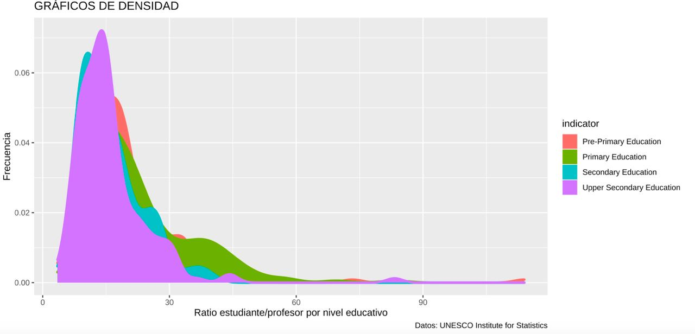
En primer lugar se filtra la columna indicator por los valores de la gráfica mostrada y además eliminamos posibles datos nulos:
student_data_ratio <- student_data_ratio |> filter(indicator %in% c("Pre-Primary Education", "Primary Education", "Secondary Education", "Upper Secondary Education")) |> drop_na(student_ratio, indicator) Después se muestra la gráfica con los datos y ejes concretos. Además se selecciona la función geom_density para crear el gráfico de densidad indicando un alpha para la transparencia y el linewidth para el tamaño de la línea de la gráfica:
ggplot(data = student_data_ratio, aes(x = student_ratio, fill = indicator, color = indicator)) +
geom_density(alpha = 1, linewidth = 1) +
labs(title = "GRAFICOS DE DENSIDAD", x="Ratio estudiante/profesor por nivel educativo", y="Frecuencia", caption="Datos: UNESCO Institute for Statistics")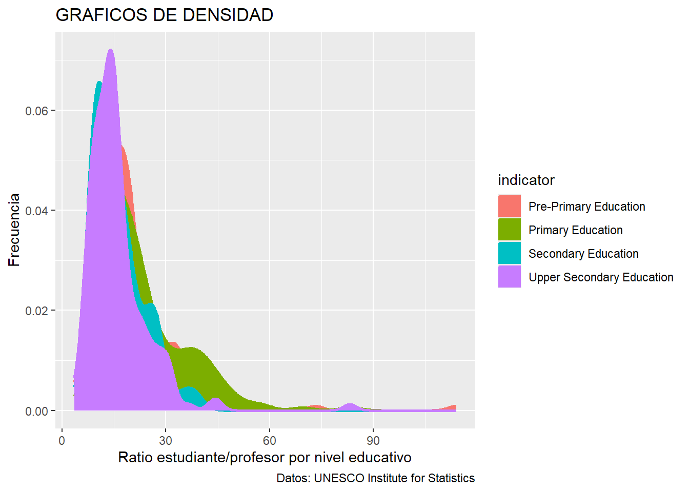
Ejercicio 3:
Intenta replicar lo más fiel posible el gráfico inferior (mismos datos que gráfico anterior). Añade o cambia lo que consideres para tener un tamaño base de 14, la legenda en la parte inferior, los títulos de los ejes en tamaño 11, el caption en tamaño 7, el título en negrita y el subtítulo en tamaño 9.
Importante
Para fijar el tamaño de base a 14 y el resto de estilos dentro de theme(), escribid:
theme_set(theme_light(base_size = 14))
theme_update(
axis.text.x = ...
axis.text.y = ...
...
plot.title = ...
...
) 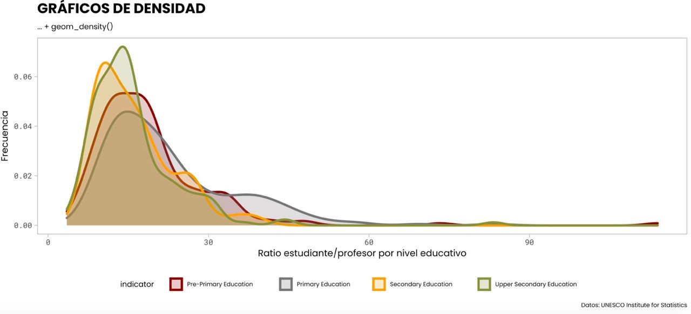
Se asignan los diferentes valores al theme que se ha asignado inicialmente con un base_size de 14. Además para una representación mas fiel al gráfico se escogen los colores del gráfico para crear una paleta que posteriormente se asigne a los diferentes elementos de la gráfica.
theme_set(theme_light(base_size = 14))
theme_update(
axis.title.x = element_text(size = 11),
axis.title.y = element_text(size = 11),
axis.text.x = element_text(size = 7),
axis.text.y = element_text(size = 7),
plot.caption = element_text(size = 7),
plot.title = element_text(face = "bold"),
plot.subtitle = element_text(size = 9),
legend.position = "bottom",
legend.title = element_text(size = 8),
legend.text = element_text(size = 8),
panel.grid = element_blank()
)
colores <- c("#8b1815","#717171","#f8ab3c","#848b4a")Se construye la gráfica modificando parámetros para hacerla más similar a la de la imagen del ejercicio 3:
ggplot(data = student_data_ratio, aes(x = student_ratio, fill=indicator, color=indicator)) +
geom_density(alpha = 0.3, linewidth = 1) +
scale_fill_manual(values = colores) +
scale_color_manual(values = colores) +
labs(title = "GRAFICOS DE DENSIDAD", subtitle="... + geom_density()", x="Ratio estudiante/profesor por nivel educativo", y="Frecuencia", caption="Datos: UNESCO Institute for Statistics")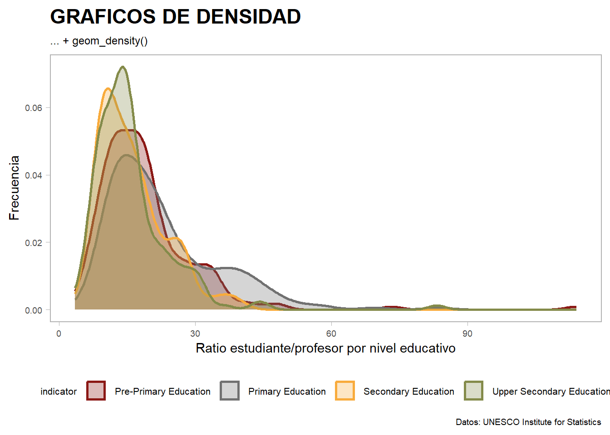
Ejercicio 4:
Sin cambiar el tema configurado en la gráfica anterior, intenta replicar lo más fiel posible el gráfico inferior:
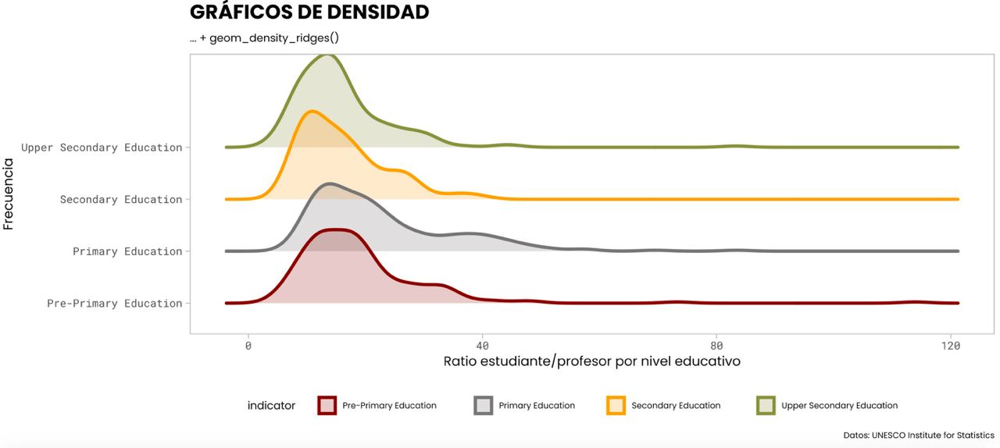
Se crea la gráfica en este caso indicando la columna “indicator” en el eje Y. Se modifica también la función que crea el gráfico de densidad para crear una gráfica de densidad por cada uno de los indicators y que así se compare visualmente:
ggplot(data = student_data_ratio, aes(x = student_ratio, y=indicator, fill=indicator, color=indicator)) +
geom_density_ridges(alpha = 0.3, linewidth = 1) +
scale_fill_manual(values = colores) +
scale_color_manual(values = colores) +
labs(title = "GRAFICOS DE DENSIDAD", subtitle="... + geom_density_ridges()", x="Ratio estudiante/profesor por nivel educativo", y="Frecuencia", caption="Datos: UNESCO Institute for Statistics")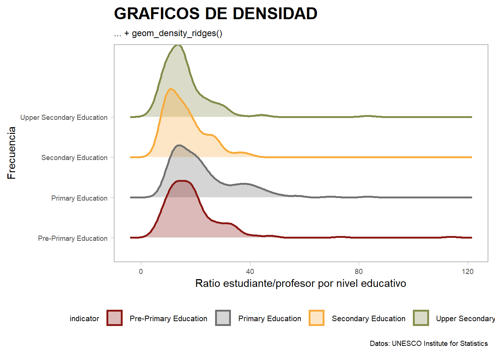
Ejercicio 5:
Repite el gráfico anterior pero componiendo (facetando) cada una por separado (en lugar de todas apiladas una encima de otra)
Para facetar por el indicator se han de deshacer los cambios del anterior ejercicio ya que no queremos un gráfico global que nos monte la comparativa directa. Aparte de estos cambios se deberá llamar a la función facet_wrap que nos permite crear estos subgráficos:
ggplot(data = student_data_ratio, aes(x = student_ratio, fill=indicator, color=indicator)) +
geom_density(alpha = 0.3, linewidth = 1) +
scale_fill_manual(values = colores) +
scale_color_manual(values = colores) +
labs(title = "GRAFICOS DE DENSIDAD", subtitle="... + geom_density()", x="Ratio estudiante/profesor por nivel educativo", y="Frecuencia", caption="Datos: UNESCO Institute for Statistics") +
facet_wrap(~indicator)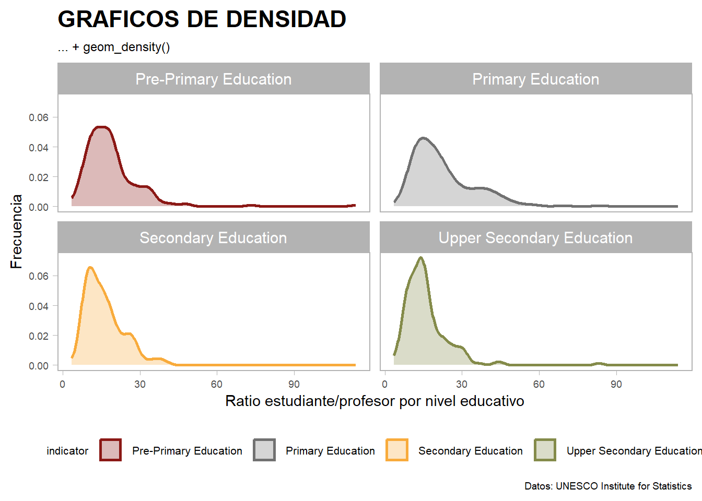
Ejercicio 6:
Carga el archivo
regions.csv. Incorpora a la tabla de la UNESCO la información contenida en la tabla regions, de forma que no haya ningún registro con valores ausentes (solo deben sobrevivir los registros que matcheen en ambas tablas).
regions_data <- read_csv("./datos/regions.csv")
student_data <- student_data |> inner_join(regions_data, by = "country_code")
student_data_ratio <- student_data_ratio |> inner_join(regions_data, by = "country_code")Sin cambiar el tema configurado en la gráfica anterior, intenta replicar lo más fiel posible el gráfico inferior.
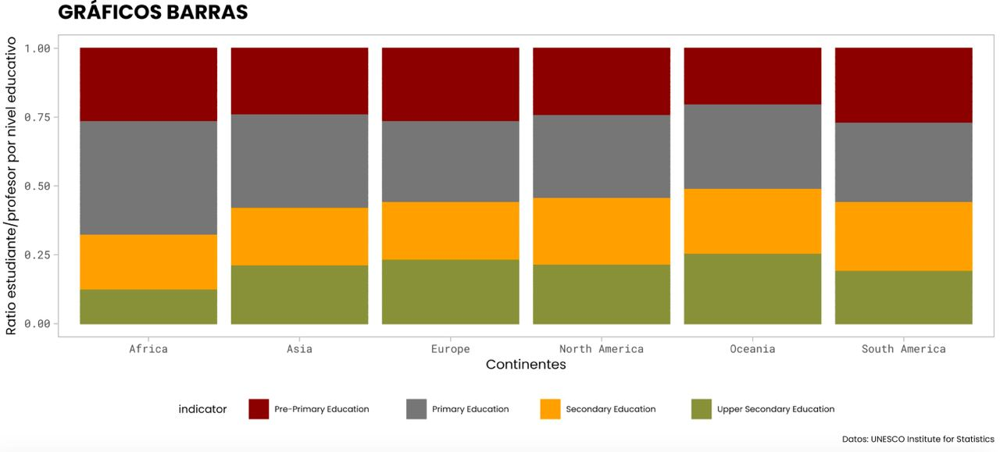
Dado que se indica en el enunciado “Sin cambiar el tema configurado en la gráfica anterior” se escoge la tabla resultado del inner_join con la tabla de studen_data_ratio para realizar la gráfica de barras.
Para crear el gráfico de barras se utilizará la función geom_bar(), además es importante eliminar posibles datos nulos resultantes de la unión de las tablas para manejar correctamente los datos.
Por otro lado será necesario calcular la media estudiantes por nivel educativo para representarlo en el gráfico de barras:
student_data_ratio_bar <- student_data_ratio |> drop_na(student_ratio, indicator, region) |> summarise(mean_ratio_indicator = mean(student_ratio), .by = c(indicator,region))
ggplot(data = student_data_ratio_bar, aes(x = region, y= mean_ratio_indicator, fill=indicator)) +
scale_fill_manual(values = colores) +
scale_color_manual(values = colores) +
geom_bar(position = "fill", stat = "identity") +
labs(title = "GRAFICO DE BARRAS", x="Continentes", y="Ratio estudiante/profesor por nivel educativo", caption="Datos: UNESCO Institute for Statistics")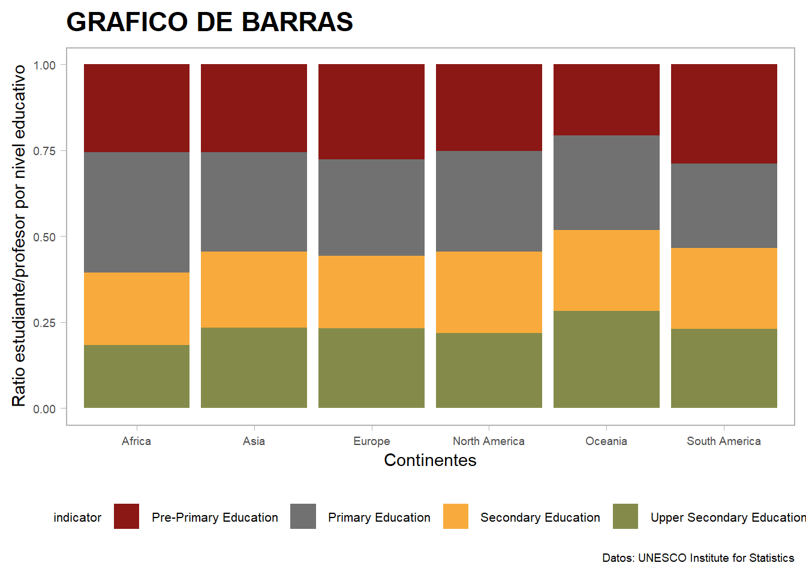
Ejercicio 7
Quédate solo con los registros relativos a educación primaria. Tras ello, replica el siguiente gráfico (usando de base el mismo tema configurado anteriormente, modificando lo que consideres)
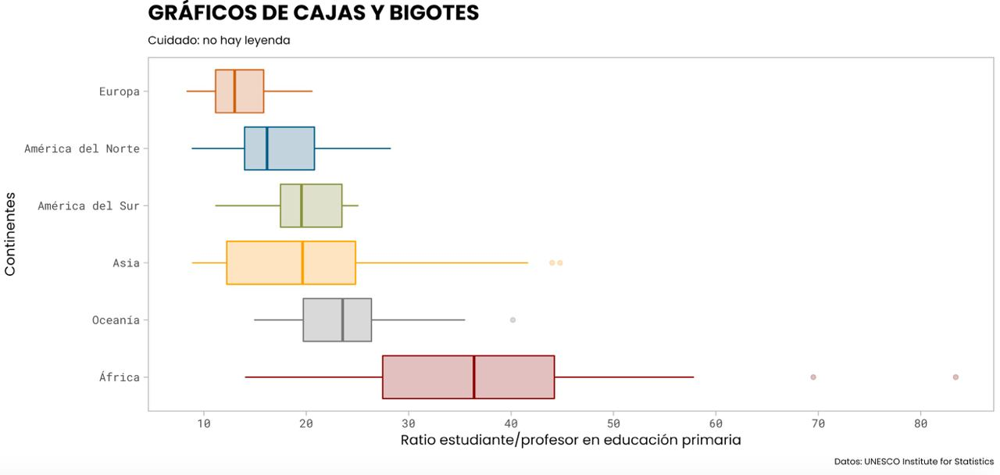
Se filtra en primer lugar la tabla por los registros de educación primaria.
Se modifica el tema previo eliminando la leyenda y el grid de la gráfica.
También al haber más muestras se ha de modificar la paleta de colores que se está utilizando.
Para construir este gráfico vamos a necesitar en el eje X el student_ratio y en el eje Y las diferentes regiones. Si se añaden directamente salen desordenadas por lo que habrá que utilizar la funcion reorder. Además a este reorder se le aplicará un orden inverso ya que se reordena a la inversa.
Una vez ordenado se genera el gráfico de cajas y bigotes, se asignan las etiquetas correspondientes de los continentes en el eje Y y además se crea una secuencia en el eje X que va de 10 en 10 desde el 10 al 80.
student_data_ratio_pr_ed <- student_data_ratio |> filter(indicator == "Primary Education")
theme_update(legend.position = "none",panel.grid = element_blank())
colores_box <- c("#8b1815","#f8ab3c","#c16236","#316672","#717171","#848b4a")
ggplot(data = student_data_ratio_pr_ed, aes(x=student_ratio, y=fct_rev(reorder(region,student_ratio, FUN = median)), fill=region, color=region)) +
geom_boxplot(alpha = 0.3) +
scale_y_discrete(labels = c("África","Oceanía","Asia","América del Sur","América del Norte","Europa")) +
guides(fill = "none", color="none") +
scale_fill_manual(values = colores_box) +
scale_color_manual(values = colores_box) +
scale_x_continuous(breaks = seq(10,80,10)) +
labs(title = "GRAFICOS DE CAJAS Y BIGOTES", subtitle = "Cuidado: no hay leyenda", x="Ratio estudiante/profesor por nivel educativo", y="Continentes", caption="Datos: UNESCO Institute for Statistics")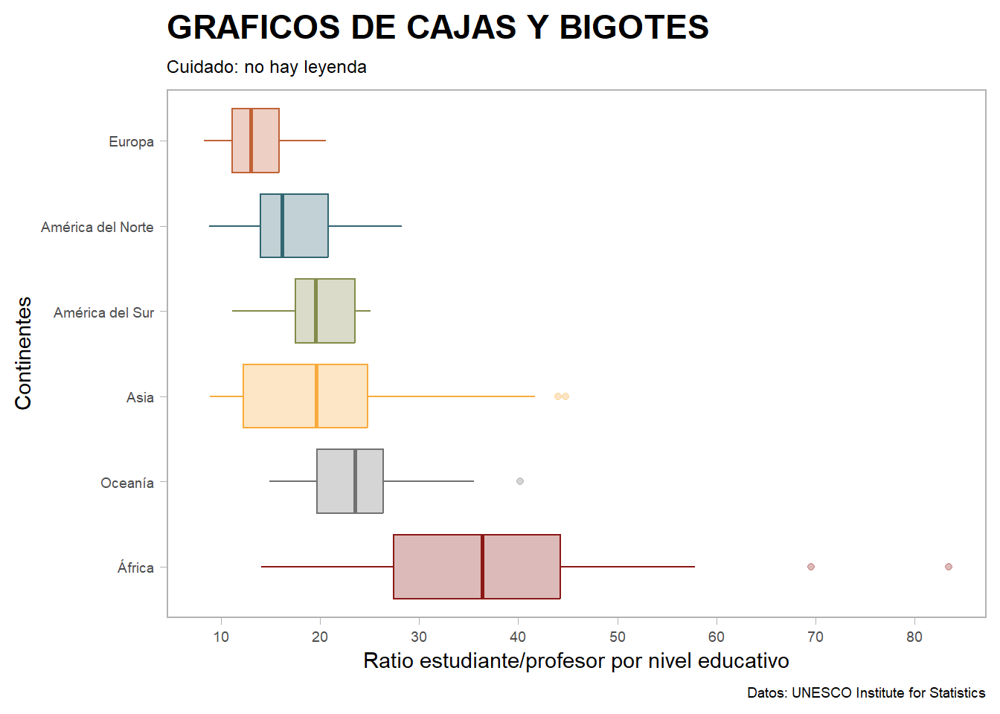
Ejercicio 8
Replica el siguiente gráfico (usando de base el mismo tema configurado anteriormente, modificando lo que consideres)
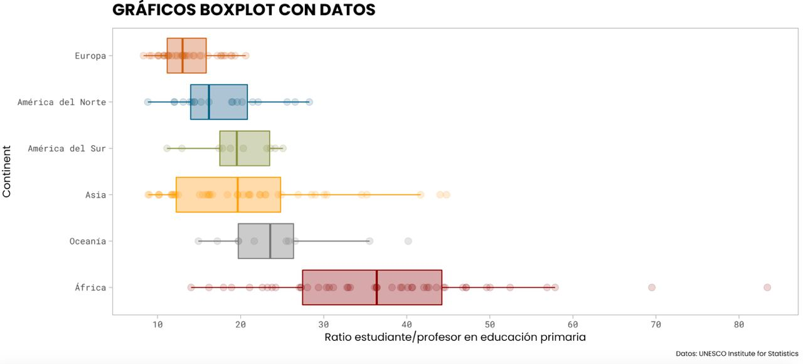
Para completar este ejercicio se ha mantenido el código del anterior y además se ha añadido la funcion geom_point para pintar los puntos que representan los valores del Ratio estudiante/profesor en los diferentes continentes.
ggplot(data = student_data_ratio_pr_ed, aes(x=student_ratio, y=fct_rev(reorder(region,student_ratio, FUN = median)), fill=region, color=region)) +
geom_boxplot(alpha = 0.3) +
geom_point(size = 2, alpha = 0.2) +
scale_y_discrete(labels = c("África","Oceanía","Asia","América del Sur","América del Norte","Europa")) +
guides(fill = "none", color="none") +
scale_fill_manual(values = colores_box) +
scale_color_manual(values = colores_box) +
scale_x_continuous(breaks = seq(10,80,10)) +
labs(title = "GRÁFICOS BOXPLOT CON DATOS", x="Ratio estudiante/profesor en educación primaria", y="Continent", caption="Datos: UNESCO Institute for Statistics")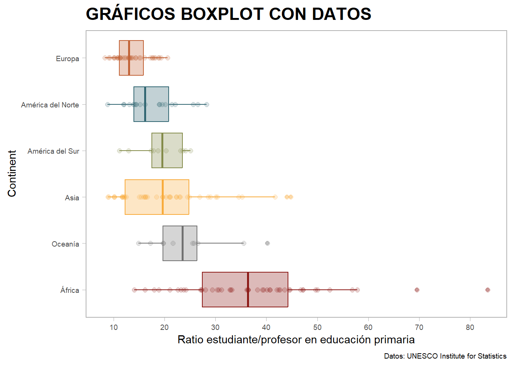
Ejercicio 9
Replica el siguiente gráfico (usando de base el mismo tema configurado anteriormente, modificando lo que consideres). Importante: deja la semilla fijada como se indica
set.seed(1234567)(para que a todos nos salga el mismo gráfico), y controla width, que mide el “rango” de aleatoriedad.
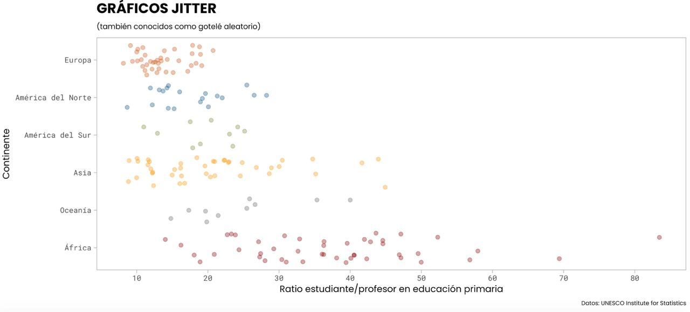
Para realizar este gráfico se fija la semilla de aleatoriedad y después usando el mismo tema del ejercicio anterior y los mismos datos, se modifica la forma de visualización del gráfico a geom_jitter.
set.seed(1234567)
ggplot(data = student_data_ratio_pr_ed, aes(x=student_ratio, y=fct_rev(reorder(region,student_ratio, FUN = median)), fill=region, color=region)) +
geom_jitter(alpha = 0.4) +
scale_y_discrete(labels = c("África","Oceanía","Asia","América del Sur","América del Norte","Europa")) +
guides(fill = "none", color="none") +
scale_fill_manual(values = colores_box) +
scale_color_manual(values = colores_box) +
scale_x_continuous(breaks = seq(10,80,10)) +
labs(title = "GRÁFICOS JITTER", subtitle='(también conocidos como gotelé aleatorio)', x="Ratio estudiante/profesor en educación primaria", y="Continente", caption="Datos: UNESCO Institute for Statistics")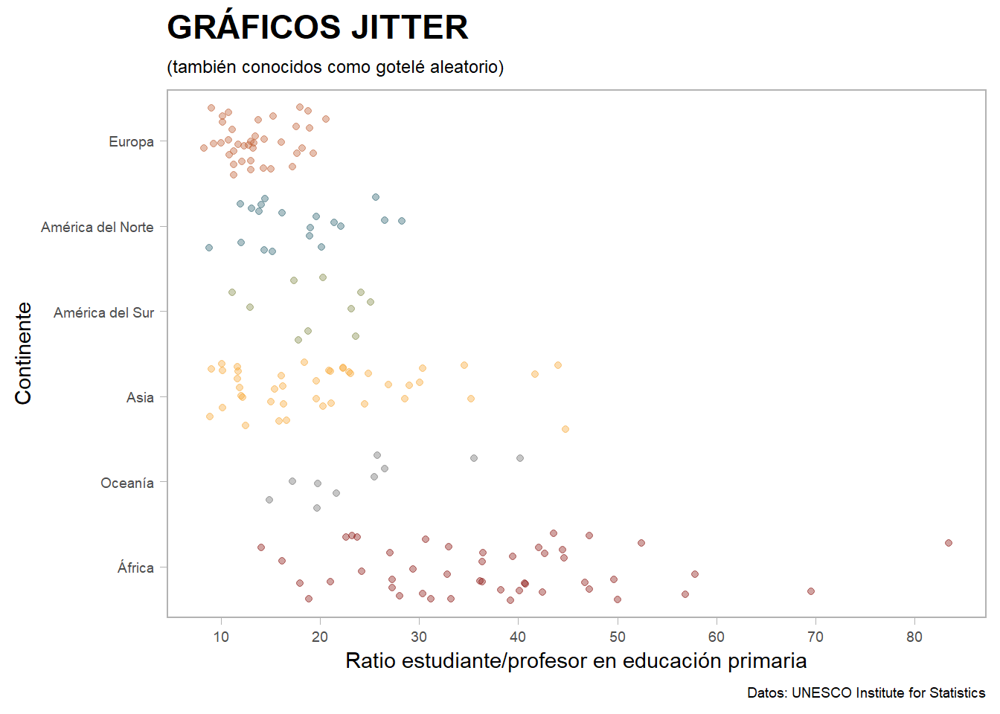
Ejercicio 10
Para ser el Batman de los gráficos!!!!. En función de los gráficos anteriores, decide que medida de centralidad será mejor usar con los datos. Tras ello, calcula dicha medida de centralidad sobre student_ratio a nivel global. Tras ello, replica el siguiente gráfico (usando de base el mismo tema configurado anteriormente, modificando lo que consideres), donde el punto más gordo representa dicha medida de centralidad en cada continente. Para la línea vertical, busca
? geom_vline. Cambia subtítulo como corresponda.
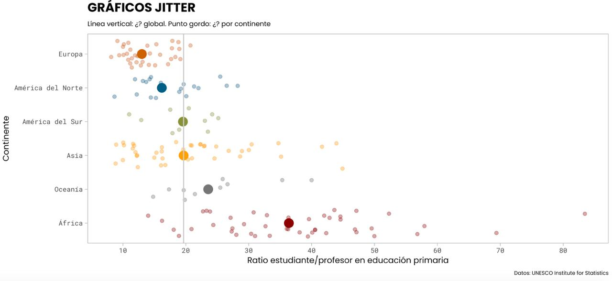
Como medida de centralidad se ha elegido la media para este gráfico. Para representar los puntos dispersos se mantiene el geom_jitter, pero como partes nuevas se ha añadido el geom_vline que nos permite pintar la línea que establece la media general entre todos los datos y stat_summary que pinta con un punto grande la media por continente del ratio estudiante/profesor en primaria
set.seed(1234567)
ggplot(data = student_data_ratio_pr_ed, aes(x=student_ratio, y=fct_rev(reorder(region,student_ratio, FUN = median)), fill=region, color=region)) +
geom_jitter(alpha = 0.4) +
geom_vline(xintercept = student_data_ratio_pr_ed |> pull(student_ratio) |> mean(),
color = "blue",
linewidth = 1) +
stat_summary(fun= mean, geom ="point", size = 5) +
scale_y_discrete(labels = c("África","Oceanía","Asia","América del Sur","América del Norte","Europa")) +
guides(fill = "none", color="none") +
scale_fill_manual(values = colores_box) +
scale_color_manual(values = colores_box) +
scale_x_continuous(breaks = seq(10,80,10)) +
labs(title = "GRÁFICOS JITTER", subtitle='Línea vertical: Media general. Puntos grandes: Medias por continentes', x="Ratio estudiante/profesor en educación primaria", y="Continente", caption="Datos: UNESCO Institute for Statistics")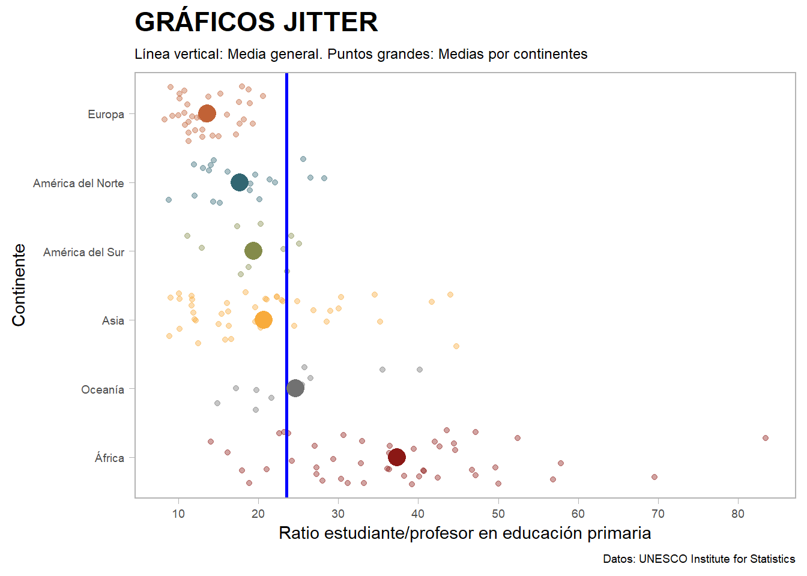